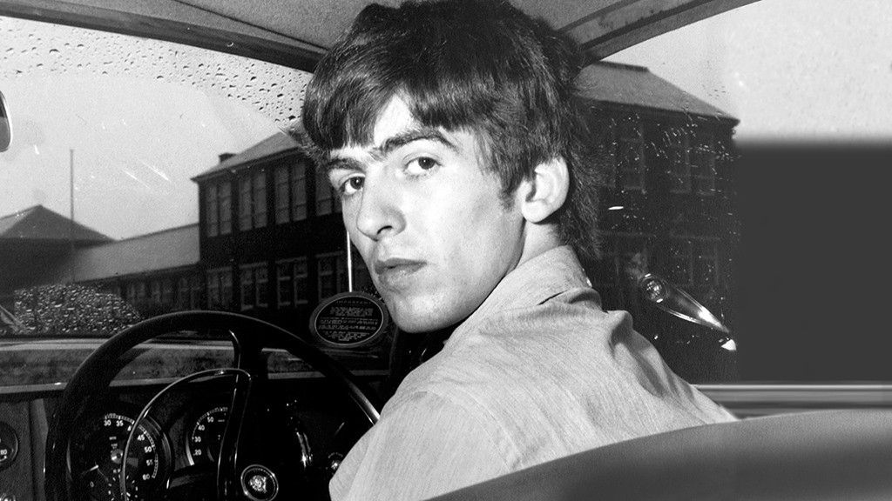
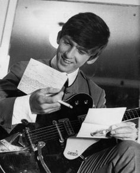
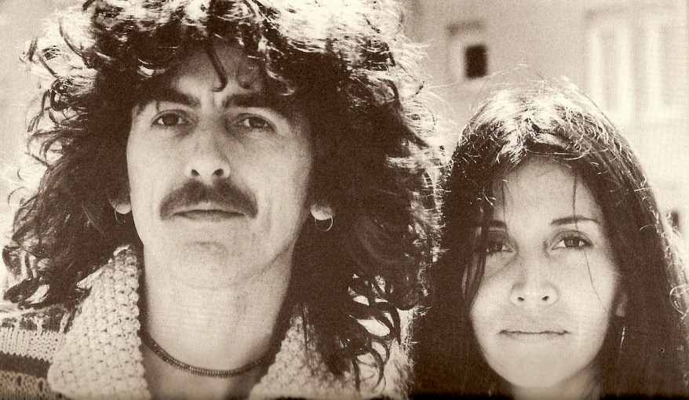

The Beatles

Home |
John Lennon |
George Harrison |
Ringo Starr |
Paul McCartney |
Discography |
Other Beatles members |
Discography Selections
George Harrison


-
Pop star, songwriter, recording artist and producer George Harrison
was born on February 25, 1943, in Liverpool, England. The youngest
of Harold and Louise French Harrison's four children, George played
lead guitar and sometimes sang lead vocals for the Beatles.
-
As Harrison would later describe it, he had an "epiphany" of sorts
at the age 12 or 13 while riding a bike around his neighborhood and
getting his first whiff of Elvis Presley's "Heartbreak Hotel"
, which
was playing from a nearby house. By the age of 14, Harrison, whose
early rock heroes included Carl Perkins, Little Richard and Buddy
Holly, had purchased his first guitar and taught himself a few
chords.
-
Impressed with his younger friend's talents, Paul McCartney
, who
had recently joined up with another Liverpool teenager, John Lennon,
in a skiffle group known as the Quarrymen, invited Harrison to see
the band perform. Harrison and Lennon actually shared some common
history. Both had attended Dovedale Primary School, but oddly had
never met. Their paths finally crossed in early 1958. McCartney had
been pushing the 17-year-old Lennon to let the 14-year-old Harrison
join the band, but Lennon was reluctant to let the youngster team up
with them. As legend has it, after seeing McCartney and Lennon
perform, George was finally granted an audition on the upper deck
of a bus, where he wowed Lennon with his rendition of popular
American rock riffs.
-
In 1974, his marriage to Pattie Boyd, whom he'd
married eight years
before.In 1978, Harrison, newly married to Olivia Arias
and the
father of a young son, Dhani, returned to the studio to record his
eighth solo album, George Harrison, which was released the
following year. It was followed two years later with Somewhere in
England, which was still being worked on at the time of
John Lennon's assassination on December 8, 1980.
-
But a comeback of sorts arrived in 1987, with the release of his
album Cloud Nine. The record featured a pair of hits and led to
Harrison linking up with Jeff Lynne, Roy Orbison, Tom Petty and
Bob Dylan to form what was dubbed a "super group" in the form of
the Traveling Wilburys. Encouraged by the commercial success of the
Wilburys two studio albums, Harrison took to the road in 1992,
embarking on his first solo tour in 18 years.
-
Still, the ensuing years were not completely stress-free. In 1998,
Harrison, a longtime smoker, reportedly was successfully treated
for throat cancer. A year later, his life was again put on the line
when a deranged 33-year-old Beatles fan somehow managed to
circumvent Harrison's intricate security system and detail and
broke into his home, attacking the musician and his wife, Olivia,
with a knife. Harrison was treated for a collapsed lung and minor
stab wounds. Olivia suffered several cuts and bruises.In May 2001,
Harrison's cancer returned. There was lung surgery, but doctors
soon discovered the cancer had spread to his brain. That autumn
he traveled to the United States for treatment and eventually
landed at the UCLA Medical Center in Los Angeles. He died on
November 29, 2001, at a friend's house in LA with his wife and
son at his side.

Quoted by George Harrison:
"You've got as many lives as you like, and more, even ones
you don't want."
Home |
John Lennon |
Ringo Starr |
Paul McCartney